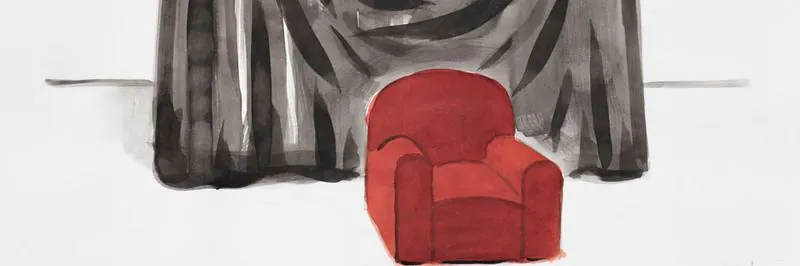
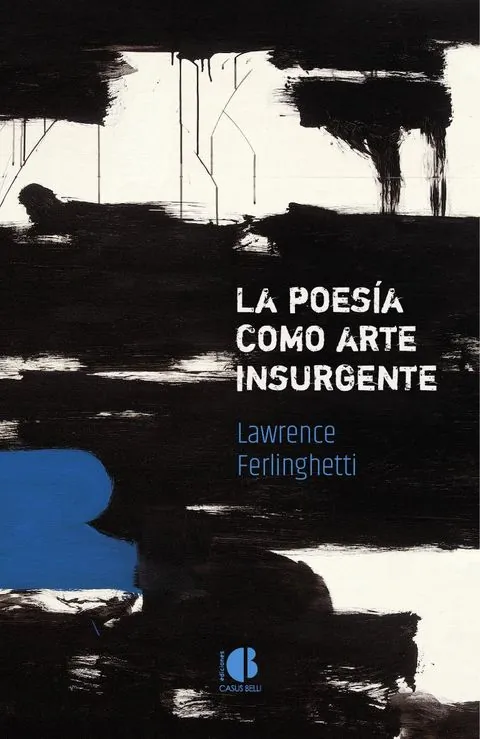
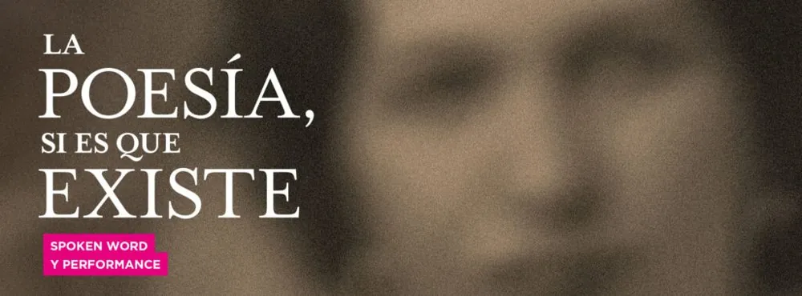
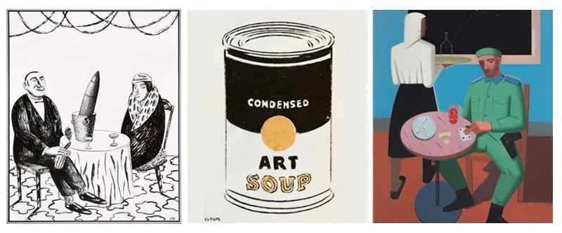
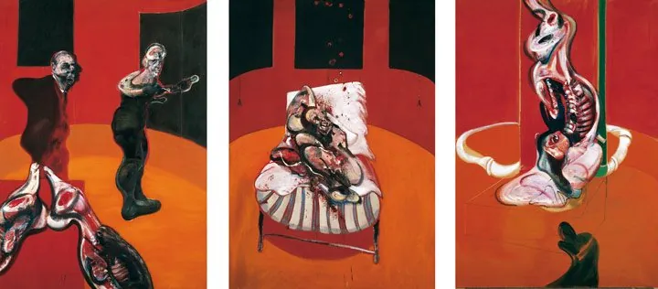

New book. “Tengo la impresión de que el cielo se prepara para la lluvia”, published by Espasa and illustrated with drawings by El Roto and Rábago.
Official website
Ediciones Casus Belli

The most lucid and combative aphoristic writings of Lawrence Ferlinghetti, one of the essential voices of 20th-century poetry and critical culture, translated into Spanish by Óscar Curieses.
See the book
New book. “Tengo la impresión de que el cielo se prepara para la lluvia”, published by Espasa and illustrated with drawings by El Roto and Rábago.

Performance. Óscar Curieses performed Casi un libro de icebergs at the Centro de Arte José Guerrero, Granada.
Festival Kerouac Vigo. Óscar Curieses and Pablo Ramírez (La poesía, si es que existe) performed at the 2024 edition of the Festival Kerouac in Vigo.
Festival Kerouac New York. Óscar Curieses performed Casi un libro de icebergs at the 2024 edition of the Festival Kerouac in New York.

After its run at the Centro Guerrero in Granada, the exhibition curated by Óscar Curieses arrives in Madrid. Devoted to the work of Andrés Rábago, it explores the connections between his three visual identities (OPS, El Roto and Rábago) through recurring elements that appear in his work in different forms over time.
Óscar Curieses also responds to Rábago’s work in a series of short stories written specially for the exhibition.

A talk-performance on his book about the painter Francis Bacon, on Saturday 3 December at 6:30 pm, as part of the series Poetas en el Prado I: No separes de mi cuerpo el alma.

Óscar Curieses is a writer, poet, journalist and lecturer at the University of Alcalá (UAH). The author of “Libro de los icebergs”, “Hombre en azul” and “En el cine de Auster”, he runs the spoken word project La poesía, si es que existe with Pablo Ramírez.
Full biography